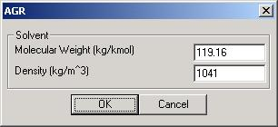

AGR Module (Acid Gas Removal)
 The
ASU module is designed to emulate an air separation unit which separates an
incoming air stream into a high purity oxygen stream and a nitrogen-rich side stream.
The ASU module is intended to provide oxygen to a gasifier,
so the products (O2 and N2) exit the module as gases, not
as liquids.
The
ASU module is designed to emulate an air separation unit which separates an
incoming air stream into a high purity oxygen stream and a nitrogen-rich side stream.
The ASU module is intended to provide oxygen to a gasifier,
so the products (O2 and N2) exit the module as gases, not
as liquids.
An ASU is based on a cryogenic distillation process--the only economical option at large capacities. Cryogenic distillation separates a vapor/liquid mixture based on differences in the vapor pressures of various components. The distillation column operates at pressures from 8-20 bar, and at temperatures on the order of 100 K [Seader 1998]. Air is first compressed, then passed through a molecular sieve bed to filter out any water, CO2, or hydrocarbons that would freeze at the low operating temperatures. Cold product streams are used to cool the incoming air stream in the heat exchanger before the inlet air enters the disillation column. Upon exiting, the products are at near-ambient temperatures of high pressure. Product purities are typically 95% oxygen, and >99% nitrogen. If desired, the high pressure gases can be expanded through turbines to produce power. The primary energy requirements for the ASU are a result of gas compression.
The ASU model assumes that air is compressed outside the unit in a separate
compressor module. All of the oxygen entering the unit is assumed to exit in
the oxygen product stream [Allam 1992]. The inlet
argon is assumed to partition 75% to the oxygen stream and 25% to the nitrogen
stream based on the relative vapor pressure of argon with respect to oxygen and
nitrogen [Woodward 1990]. All separation and heat exchange are accounted for
internally within the model. All components except oxygen, nitrogen, and argon
are removed from the unit and are therefore only accounted for in the energy
balance. The model checks the user specified temperature, pressure, and
composition to ensure vapor-phase effluents.
Connections
- Outlet Port 0 : Outlet gas stream.
Graphical User Interface (UI)
The UI window prompts the user for the desired properties of the two outlet gases: O2 and N2. These properties act as the target values by which the ASU module operates. Module calculations are governed by the temperature, pressure, and purity of the exiting oxygen gas, as well as by the temperature and pressure of the exiting nitrogen gas.
High pressure products at ambiant temperatures
represent typical outlet gas properties.
References
- Allam, R. J., Topham, A., "Integrated Air Separation Plant-Integrated Gasification Combined Cycle Power Generator," U.S. Pat. No. 5081845, Jan. 21, 1992.
- Seader,
J. D. and
- Woodward, D. W., Agrawal, R. "Air Separation Process for the Production
of Oxygen-rich and Nitrogen-rich Products,",
U.S. Pat. No. 4936099,